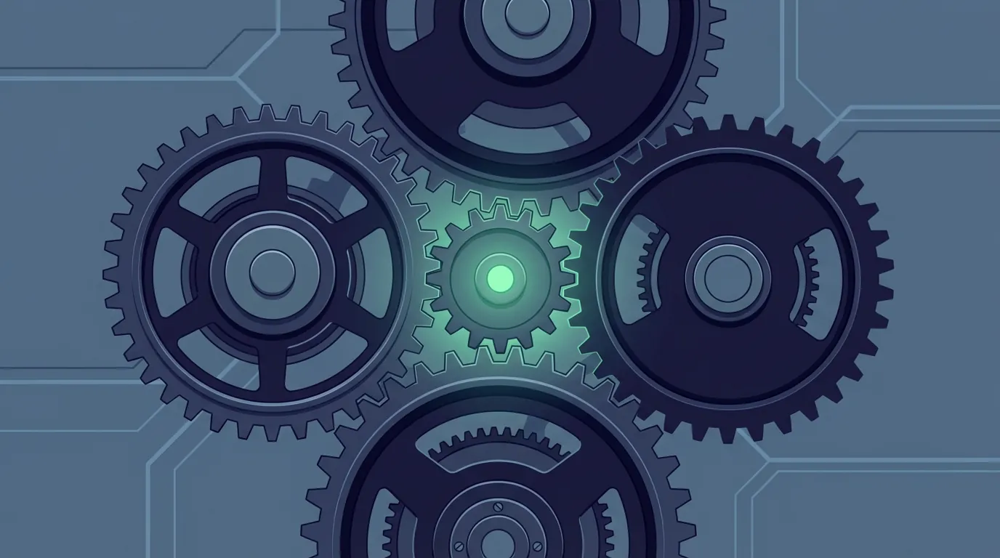

KI-Strategie · · 8 Min.
Das Tool läuft. Warum fast niemand es nutzt.
Aus dem Archiv: Dieser Beitrag ist vor über einem halben Jahr erschienen. Manche Zahlen und Produktnamen haben sich seither geändert.

Mit KI erstellt (gpt-image-2.5-sunburst, 10/2026)Das Wichtigste in Kürze
- Schulungen erzeugen Wissens-Spikes, keine Gewohnheiten: nach 3-6 Monaten ohne Übungsstruktur ist fast alles weg
- Champions funktionieren nicht wegen Wissenstransfer, sondern weil sie Qualitätskontrolle in einem System mit 50-80% Erfolgsrate einbauen
- Die eigentliche Veränderung ist architektonisch: KI läuft nicht mehr in der Cloud, sondern als lokaler Agent auf dem Gerät – mit Sandbox-Zugriff auf Dateien und kontrollierten externen Verbindungen
- Diese Architektur ist es, die alte Compliance-Annahmen bricht: Cowork, OpenClaw und NemoClaw basieren alle auf demselben Prinzip
- Das Schleusen-Prinzip gibt Teams die Entscheidungssprache die diese Architektur auf organisatorischer Ebene spiegelt
In Workshops mache ich regelmäßig dasselbe Experiment. Am Ende der Schulung die Frage: "Wer plant, das heute noch auszuprobieren?" Fast alle Hände. Drei Wochen später, im Nachgespräch: "Wer nutzt KI regelmäßig für echte Aufgaben?" Drei, vier Hände. Manchmal fünf.
Laut Bitkom-Digitalindex 2025 haben 76% der deutschen Unternehmen keine systematische KI-Strategie. Diese drei Hände zeigen genau warum.
Warum KI-Schulungen nach drei Monaten verpufft sind
Das ist kein Motivationsproblem. Es ist ein Lernpsychologie-Problem, und ich habe es als Lehrer zehn Jahre lang beobachtet bevor ich KI-Berater wurde.
Schulungen erzeugen Wissens-Spikes. Direkt danach können Teilnehmer das Gelernte anwenden, fühlen sich kompetent, sind motiviert. Dann kommt der Alltag. Keine Übungsstruktur, keine Kolleg:innen die dasselbe tun, keine Feedbackschleifen. Lernkurven zeigen nach drei bis sechs Monaten ohne Praxiseinbettung dasselbe: schneller Kompetenzabfall zurück auf Ausgangsniveau, außer bei den wenigen die von selbst weitergemacht haben.
Was dauerhaftes Verhalten erzeugt, ist nicht ein zweitägiges Training, sondern wiederholte Anwendung in echten Situationen mit Feedback von jemandem der weiter ist. In der Schule heißt das Übungsaufgaben und Korrekturen. Im Unternehmen heißt das Champions.
Das ist der Grund warum Unternehmen mit Champions-Netzwerken andere Ergebnisse sehen. Deloitte hat über 15.000 Mitarbeiter in ein CoE-Programm geführt und hat heute 80% tägliche KI-Nutzung. Cox Automotive verdoppelte die Antwortrate im Kundenkontakt. Beide haben nicht einfach mehr Schulungen gebaut. Sie haben Übungsstrukturen gebaut.
Was Champions wirklich sind
Die Standard-Erklärung: 2-5 KI-Botschafter pro Team verbreiten Wissen und helfen Kolleg:innen. Das stimmt, aber es verfehlt den eigentlichen Mechanismus.
Aktuelle agentische KI-Tools wie Cowork haben bei komplexen, mehrstufigen Tasks eine Erfolgsrate von 50-80%. Das bedeutet: zwischen 20 und 50 Prozent der Ergebnisse brauchen Korrekturrunden oder sind direkt unbrauchbar. Für produktiven Einsatz im Unternehmen braucht es Menschen, die gut genug einschätzen können wann ein Output stimmt und wann nicht. Menschen mit Domänenwissen in ihrem Bereich.
Das sind die Champions. Nicht Trainer, sondern Qualitätskontrolle. Der Buchhalter, der beurteilen kann ob der automatisch erstellte Monatsabschluss-Report die Zahlen korrekt interpretiert. Die Vertriebsmitarbeiterin, die merkt wenn ein KI-generiertes Angebot den Tonfall dieses Kunden nicht trifft.
Ohne diese menschliche Verifikationsschicht ist KI-Automatisierung kein Gewinn. Es ist ausgelagertes Risiko an ein System das manchmal falsch liegt.
Wo fängt man an? Mit den Personen im Unternehmen, die jetzt schon experimentieren. In jedem Betrieb gibt es zwei oder drei Mitarbeiter die KI privat nutzen, Prompts ausprobieren, Workflows testen. Diese Menschen nicht zu Champions zu machen ist das häufigste verschenkte Potential das ich sehe. Sie brauchen keine Vollzeitstelle, kein Budget, keine formale Rolle. Sie brauchen 2-3 anerkannte Stunden pro Woche und einen monatlichen Austausch wo sie zeigen was bei ihnen funktioniert.
Ein oft übersehener Punkt dabei: Champions geben weiter was sie selbst erlebt haben. Wer in einer Schulung gesehen hat wie man E-Mails mit KI schreibt, wird E-Mails mit KI zeigen. Wer live dabei war wie ein echter Reporting-Workflow automatisiert wurde, wer ein konkretes Unternehmens-Problem genommen und daraus gemeinsam ein Tool gebaut hat, der vermittelt eine andere Tiefe. Der Unterschied zwischen oberflächlicher und nachhaltiger KI-Adoption liegt oft nicht an der Technologie, sondern daran was die internen Multiplikatoren wirklich gesehen und selbst gemacht haben. Die Frage "was ist mit unserem konkreten Prozess möglich?" ist wertvoller als jede generische Prompt-Übung.
Was sich architektonisch wirklich verändert hat
Die meisten Unternehmen denken bei KI noch in einem Modell das seit 2023 veraltet ist: Mitarbeiter öffnet Browser, gibt Text ein, bekommt Antwort, kopiert sie irgendwo hin. Alles passiert in der Cloud, alles läuft über externe Server, der Anbieter sieht alles.
Das neue Modell funktioniert anders. Claude Cowork und Claude Code laufen als lokale Agenten auf dem Rechner des Mitarbeiters. Der Agent arbeitet in einer isolierten Sandbox, greift auf freigegebene lokale Ordner und Dateien zu, verbindet sich über das Model Context Protocol (MCP) selektiv mit externen Diensten wie Google Workspace, Salesforce oder Slack – aber nur mit explizit genehmigten. Daten verlassen das Gerät nur dort wo es bewusst erlaubt wurde.
Das ist nicht zufällig dieselbe Architektur wie OpenClaw. OpenClaw hat dieses Prinzip als Open-Source-Projekt etabliert, Claude Cowork und Code setzen es als kommerzielle Implementierung um. NemoClaw von NVIDIA legt dieselbe Architektur als Enterprise-fähigen Wrapper für regulierte Umgebungen an – mit Policy Engine, Audit-Logs und Privacy Router. Drei verschiedene Produkte, eine Grundidee: der Agent gehört zum Gerät, nicht zur Cloud.
Was das organisatorisch bedeutet: Diese Architektur bricht eine Grundannahme auf der jedes bisherige Compliance-Framework aufgebaut wurde. Arbeit passiert jetzt nicht mehr nur wenn ein Mensch bewusst vor einem Gerät sitzt. Seit Claude Dispatch im März 2026 in Research Preview ist, kann jemand einen mehrstündigen Workflow vom Smartphone aus starten, der PC führt ihn selbstständig aus. Die Verantwortlichkeits-Logik von DSGVO-Policies und internen Richtlinien wurde für eine Welt geschrieben in der jede KI-Aktion eine bewusste menschliche Handlung war. Das gilt nicht mehr.
Die Governance-Lücke die niemand laut sagt
Aus dieser Architektur folgt direkt ein praktisches Compliance-Problem: Weil Cowork lokal auf dem Endgerät läuft, kann Anthropic nicht protokollieren was der Agent tut. Cowork-Aktivitäten erscheinen deshalb aktuell nicht in den Audit-Logs, der Compliance API oder den Data Exports – auch nicht im Enterprise-Plan.
Das ist kein Versehen, das ist die strukturelle Konsequenz der lokalen Ausführung. Dieselbe Eigenschaft die Datenschutzvorteile bringt ("nichts geht ohne explizite Freigabe raus") produziert den Compliance-Nachteil ("wir können keine zentralen Logs liefern").
Für stark regulierte Branchen, Finanzdienstleister, Rechtsanwaltskanzleien, Gesundheitswesen, öffentliche Verwaltung, ist das der Grund warum NemoClaw die relevante Architektur ist: vollständig lokal, Policy Engine vorhanden, Audit-Logs im Haus. Noch Alpha-Status und primär auf Linux, aber technisch die einzige Variante die Cowork-ähnliche Fähigkeiten mit echter Enterprise-Compliance verbindet.
Was man besitzt statt was man abonniert
Ein weiterer Punkt der in den meisten Beschreibungen untergeht: Unternehmen mit Team- oder Enterprise-Plan können einen privaten Plugin-Marketplace aufbauen. Firmenspezifische Agents und Workflows entwickeln und intern verteilen. Nicht darauf warten dass Anthropic das richtige Plugin baut, sondern selbst bauen: das eigene CRM mit den eigenen Angebotsvorlagen und der eigenen Brand Voice als interner Agent, der jedem Mitarbeiter zur Verfügung steht.
Das ist der Unterschied zwischen "wir haben ein KI-Tool abonniert" und "wir haben KI-Fähigkeiten aufgebaut". Dieser Unterschied ist strategisch, nicht nur operativ. Was man gebaut hat, gehört einem. Was man abonniert, kann abbestellt werden.
Das Schleusen-Prinzip als Entscheidungs-Sprache
Das Schleusen-Prinzip habe ich ursprünglich als technische Systemarchitektur entwickelt: Rot für sensible Daten die lokal bleiben, Gelb für interne Dokumente die zu DSGVO-konformen Cloud-Diensten dürfen, Grün für öffentliche Aufgaben wo externe Modelle nutzbar sind. Es ist damit das organisatorische Spiegelbild der Architektur die Cowork, OpenClaw und NemoClaw technisch umsetzen.
Was sich bei der Arbeit mit Teams gezeigt hat: Rot, Gelb, Grün ist vor allem eine Entscheidungssprache, die keine IT-Kenntnisse voraussetzt. Der Champion im Vertrieb muss nicht verstehen wie Datenverschlüsselung funktioniert. Er muss wissen: "Angebote mit Kundendaten sind Rot, die bleiben lokal. Marktrecherchen sind Grün, da können wir externe Dienste nutzen."
Wenn Dispatch oder ähnliche Trigger dazukommen, wird das zur konkreten Handlungsregel für jeden Mitarbeiter: welche Tasks darf ich delegieren, welche nicht. Ein Champions-Netzwerk ohne diese Governance-Logik schafft Adoption, aber unkontrollierte Adoption. Und das ist in einer Welt in der lokale Agenten gerade produktiv werden das eigentliche Risiko.
Was das konkret bedeutet
Wenn man nach einer KI-Schulung nicht gemessen hat wer drei Monate später noch aktiv nutzt, fehlt die Datenbasis für nächste Entscheidungen. Mehr Schulungen zu buchen ohne diese Messung ist Schätzung, keine Strategie.
Wenn man nicht weiß welche Mitarbeiter bereits private KI-Accounts für Arbeitsaufgaben nutzen, hat man schon jetzt eine Governance-Lücke.
Zur Regulierung noch eine wichtige Präzisierung: EU AI Act Artikel 4 verpflichtet Unternehmen zur dokumentierten KI-Kompetenz ihrer Mitarbeiter – und zwar seit Februar 2025, nicht erst ab August 2026. August 2026 ist der Zeitpunkt ab dem nationale Behörden in Österreich und Deutschland aktiv kontrollieren werden. Die Pflicht besteht jetzt. Was für den Nachweis zählt: ein dokumentierter Schulungsnachweis, eine schriftliche KI-Richtlinie für das Unternehmen, und ein Rahmen der zeigt wie mit sensiblen Daten umgegangen wird. Ein halber Tag reicht für die Compliance-Grundlage. Die nachhaltige Adoption – dass das Team die KI tatsächlich produktiv nutzt und nicht nur einmal ausprobiert – braucht dann den Übungsrahmen drumherum.
Quellen
- Bitkom Digitalindex 2025
- EU AI Act Artikel 4 – KI-Kompetenzpflicht
- Anthropic Claude Dispatch Research Preview
Armin Fradler begleitet Bildungsorganisationen und Teams beim Umgang mit KI und unterrichtet selbst in der Erwachsenenbildung.